이 수업의 중심 질문(enquiry question)은 '나의 신앙이 어떻게 남을 위해 행동하고 공동체를 섬기도록 이끄는가'다. 자료는 신앙(faith)을 머릿속 믿음으로만 두지 않고, 그 믿음이 행동(action)으로 나타나는 것이라고 설명한다. 점심시간에 혼자 앉아 있는 친구, 시험 앞두고 불안한 친구, 자기 실수를 인정해야 하는 순간 같은 예를 들어, 행동 밑에 어떤 믿음과 가치가 깔려 있는지 생각하게 한다.
자료가 반복해서 보여주는 흐름은 BELIEF(믿음) → VALUE(가치) → ACTION(행동) → SERVICE(섬김)의 사슬이다. '무엇을 믿는가 → 그 믿음 때문에 무엇이 중요해지는가 → 그래서 무엇을 하는가 → 그것이 남에게 어떻게 도움이 되는가' 순서다. 수업 중 모둠 활동에서 '모든 사람은 존엄하다', '용서는 중요하다', '우리는 서로에게 책임이 있다' 같은 믿음을 골라 이 사슬을 만들고 60초 안에 설명한다.
만들어야 하는 과제는 My Faithbook이라는 사진 에세이다. Canva에서 A4 크기 8쪽으로 만들고, 파일 이름은 '이름 - My Faithbook 2026-27'로 한다. 1쪽은 소개(100단어 이내), 2~7쪽은 사진 한 장 + 25단어 이상 설명, 마지막 8쪽은 50단어 마무리 성찰이다. 완성하면 PDF로 저장해 구글 클래스룸에 올라온 드라이브 링크로 제출한다.
사진마다 붙이는 설명은 '이 사진을 고른 이유 / 어떤 가치를 나타내는지 / 내 신앙과 어떻게 연결되는지 / 이것이 섬김으로 어떻게 이어질 수 있는지'를 담으면 된다. 이 Faithbook은 그냥 끝나는 과제가 아니라, 학기 마지막 평가인 LEDU Talk(3~5분 발표, 슬라이드 최대 5장)의 재료가 된다. 다음 주에는 모둠에서 3분 발표를 하는데, 0:00~0:30 소개 / 0:30~2:30 핵심 이야기 / 2:30~3:00 마무리로 시간을 나눈다.
친구 발표에 피드백을 줄 때는 '좋았어'처럼 뭉뚱그리지 말고 구체적으로('첫 도입부가 아주 끌렸다'), 그리고 건설적으로('더 좋아지려면…') 말하라고 안내한다.
✍️ 꼭 알아야 하는 것
- BELIEF → VALUE → ACTION → SERVICE 사슬의 순서와 각 단계가 묻는 질문을 스스로 설명할 수 있어야 한다.
- My Faithbook의 분량 규칙을 정확히 지켜야 한다 — A4 8쪽, 소개 100단어 이내, 사진 설명 각 25단어 이상, 마무리 50단어, PDF로 제출.
📚 이 자료의 핵심 단어
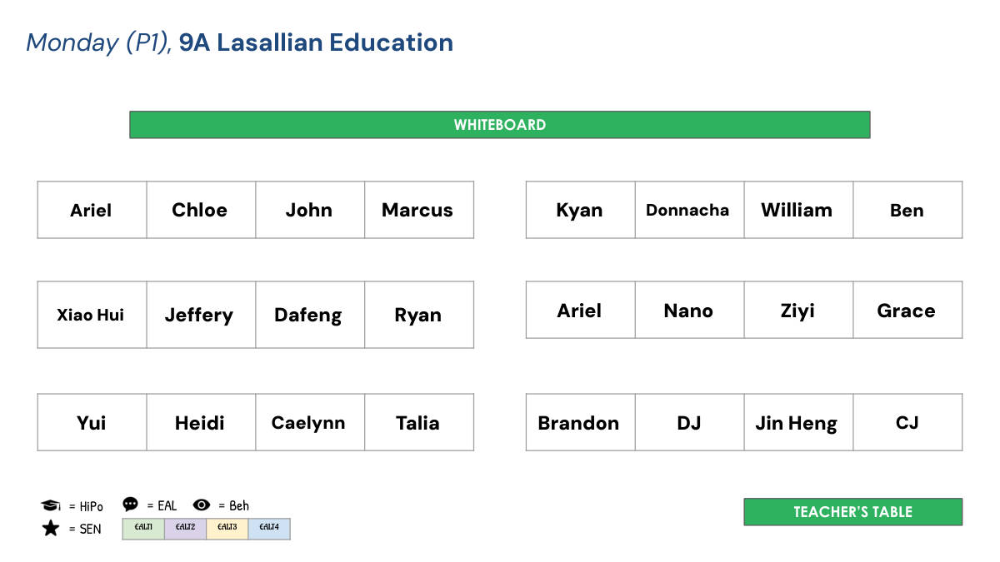
1쪽 · 9A 교실 자리 배치도
Ariel
Chloe
John
Marcus
Kyan
Donnacha
William
Ben
Xiao Hui
Jeffery
Dafeng
Ryan
Ariel
Nano
Ziyi
Grace
Yui
Heidi
Caelynn
Talia
Brandon
DJ
Jin Heng
CJ
교사 책상
월요일 (1교시), 9A 라살리안 교육
= HiPo(우수 학생)
= SEN(특별 교육 필요 학생)
= Beh(행동 지도 대상)
= EAL(영어를 제2언어로 배우는 학생)
EALT1
EALT2
EALT3
EALT4
이 쪽은 9A 반 학생 24명의 이름과 화이트보드·교사 책상 위치를 표시한 자리 배치도다.
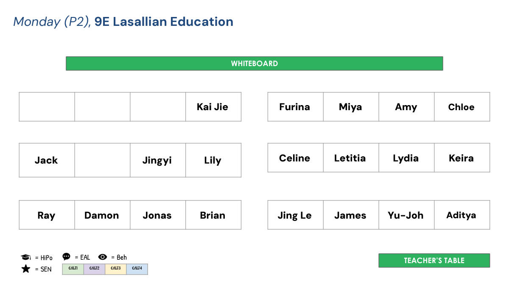
2쪽 · 교실 자리 배치도
Kai Jie
Furina
Miya
Amy
Chloe
Jack
Jingyi
Lily
Celine
Letitia
Lydia
Keira
Ray
Damon
Jonas
Brian
Jing Le
James
Yu-Joh
Aditya
TEACHER'S TABLE (선생님 책상)
월요일 (2교시), 9E 라살리안 교육
= HiPo (우수 학생)
= SEN (특수교육 필요 학생)
= Beh (행동 지원 대상)
= EAL (영어가 모국어가 아닌 학생)
EALT1
EALT2
EALT3
EALT4
이 쪽은 칠판과 선생님 책상 사이에 학생 20명의 이름을 놓은 자리 배치도다.
이름 옆 표시 HiPo·SEN·Beh·EAL은 학생별로 다른 지원이 필요함을 나타내는 분류이고, EALT1~EALT4는 영어 지원 단계를 나눈 것이다.
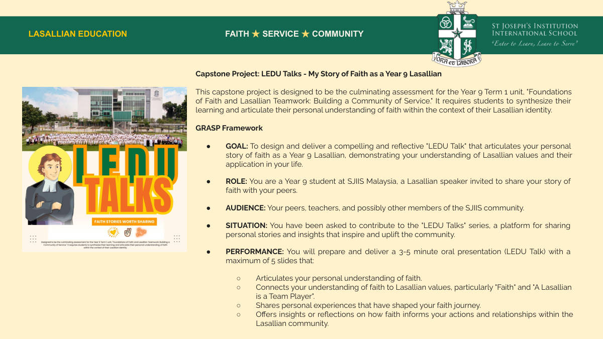
3쪽 · 캡스톤 과제: LEDU 토크
이 캡스톤 과제는 9학년 1학기 단원 "신앙과 라살리안 팀워크의 기초: 봉사의 공동체 세우기"의 최종 평가로 설계되었다.
학생은 배운 것을 종합하고, 라살리안 정체성 안에서 자기가 이해한 신앙을 말로 풀어내야 한다.
GRASP 틀
● 목표(GOAL): 9학년 라살리안으로서 자신의 신앙 이야기를 담은, 설득력 있고 성찰적인 "LEDU 토크"를 설계하고 발표한다. 라살리안 가치와 그것을 삶에 적용한 모습을 보여준다.
● 역할(ROLE): 당신은 말레이시아 SJIIS의 9학년 학생이며, 또래에게 자기 신앙 이야기를 나누도록 초청받은 라살리안 발표자다.
● 청중(AUDIENCE): 또래 학생들, 교사들, 그리고 SJIIS 공동체의 다른 구성원들이다.
● 상황(SITUATION): 공동체에 영감을 주고 힘을 북돋는 개인의 이야기와 통찰을 나누는 자리인 "LEDU Talks" 시리즈에 참여해 달라는 요청을 받았다.
● 수행(PERFORMANCE): 슬라이드 최대 5장으로 3~5분 구두 발표(LEDU 토크)를 준비해 발표한다. 발표에는 다음이 들어간다.
○ 자신이 이해한 신앙을 말로 풀어낸다.
○ 자신이 이해한 신앙을 라살리안 가치, 특히 "신앙"과 "라살리안은 팀 플레이어다"에 연결한다.
○ 자기 신앙 여정을 빚어온 개인적 경험을 나눈다.
○ 신앙이 라살리안 공동체 안에서 자신의 행동과 관계에 어떻게 영향을 주는지 통찰이나 성찰을 제시한다.
라살리안 교육 — 신앙 ★ 봉사 ★ 공동체
최종 평가물은 슬라이드 5장 이내, 3~5분짜리 구두 발표(LEDU 토크)다.
GRASP는 목표·역할·청중·상황·수행의 다섯 항목으로 과제를 설계하는 틀이며, 발표에는 신앙의 정의, 라살리안 가치(신앙·팀 플레이어)와의 연결, 개인 경험, 성찰 네 가지가 반드시 들어가야 한다.
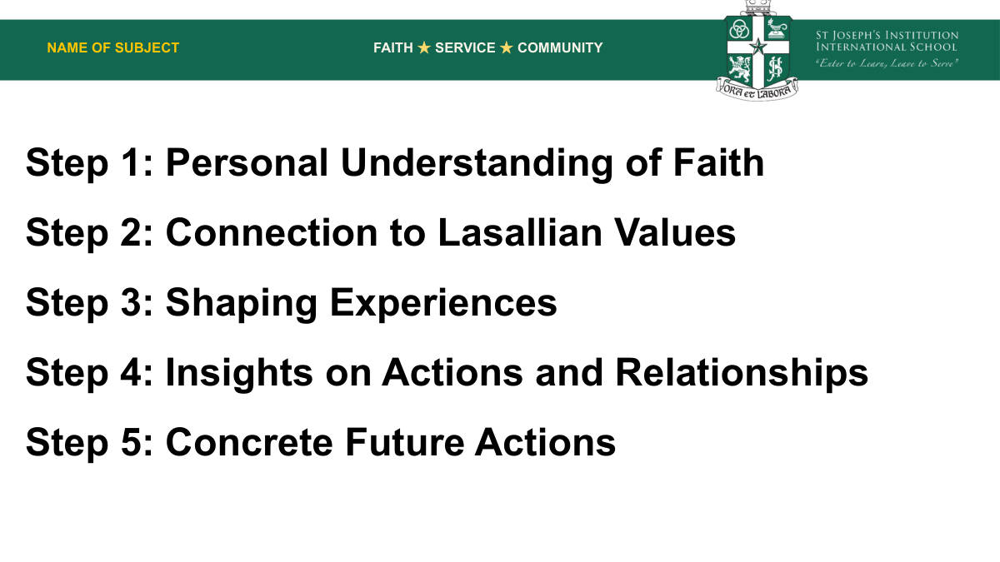
4쪽 · 믿음 성찰 5단계 과제
믿음 ★ 봉사 ★ 공동체
1단계: 믿음에 대한 나의 개인적 이해
2단계: 라살 가치와의 연결
3단계: 나를 형성한 경험
4단계: 행동과 관계에 대한 깨달음
5단계: 구체적인 앞으로의 행동
이 과제는 믿음·봉사·공동체를 주제로 하며, 1단계부터 5단계까지 순서대로 진행된다.
단계가 개인적 이해에서 시작해 라살 가치 연결, 경험, 깨달음을 거쳐 마지막에 구체적 실천 행동으로 끝난다.
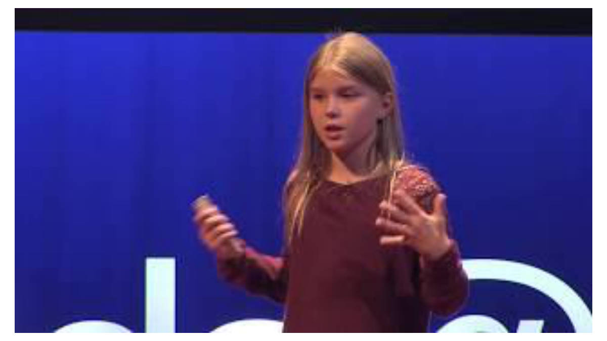
5쪽 · 글자 없는 쪽
Lesson 3 & 4A 'What is Faith Anyway?' 자료의 5번째 쪽이며, 읽을 글자가 없다.
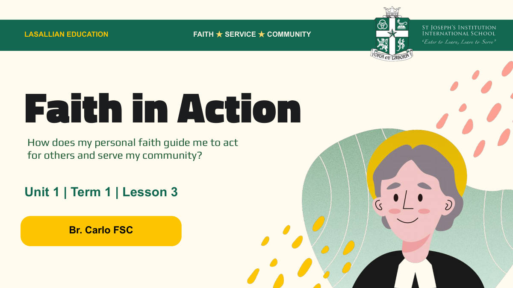
6쪽 · 믿음을 행동으로 옮기다
1단원 | 1학기 | 3과
라살리안 교육
믿음 ★ 봉사 ★ 공동체
Br. Carlo FSC
나의 개인적인 믿음은 어떻게 나를 이끌어 다른 사람을 위해 행동하고 내 공동체를 섬기게 하는가?
이 단원의 핵심 가치는 믿음·봉사·공동체 세 가지다.
이 수업 전체를 이끄는 질문은 '내 믿음이 나를 어떻게 남을 위한 행동과 공동체 섬김으로 이끄는가'다.
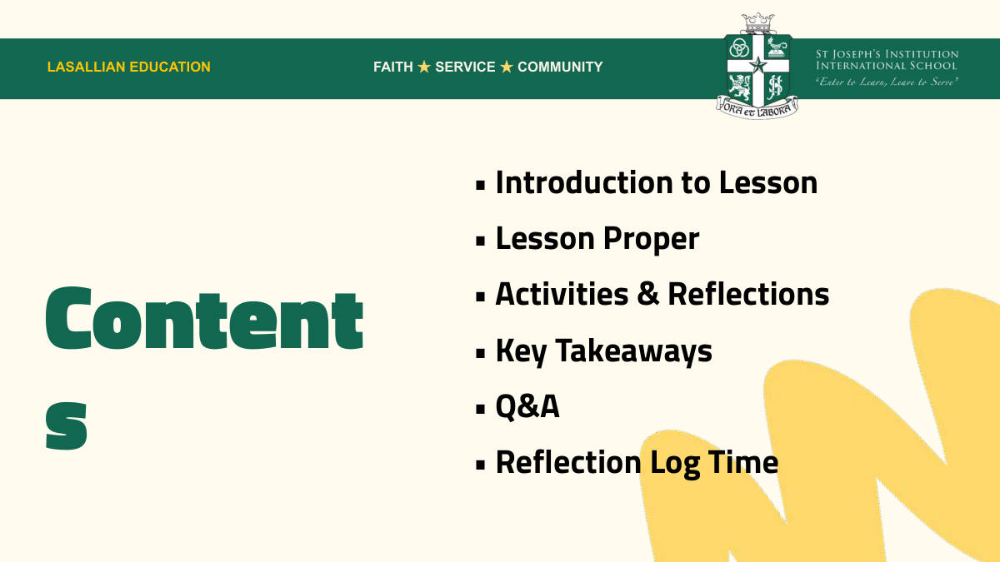
7쪽 · 수업 차례
• 수업 소개
• 본 수업
• 활동과 성찰
• 핵심 정리
• 질의응답
• 성찰 기록 시간
라살회 교육
믿음 ★ 봉사 ★ 공동체
이 쪽은 수업이 소개 → 본 수업 → 활동과 성찰 → 핵심 정리 → 질의응답 → 성찰 기록 순서로 진행된다는 차례를 보여 준다.
라살회 교육이 내세우는 세 가지 가치는 믿음·봉사·공동체다.
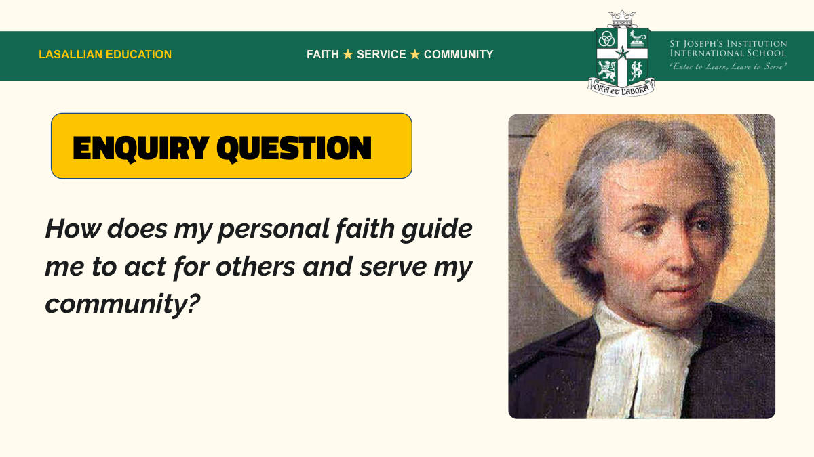
8쪽 · 탐구 질문: 믿음과 봉사
라살리안 교육
믿음 ★ 봉사 ★ 공동체
탐구 질문
이 단원의 탐구 질문(ENQUIRY QUESTION)은 '내 믿음이 남을 위한 행동과 공동체 봉사로 어떻게 이어지는가'다.
라살리안 교육이 내세우는 세 낱말은 믿음(FAITH)·봉사(SERVICE)·공동체(COMMUNITY)다.
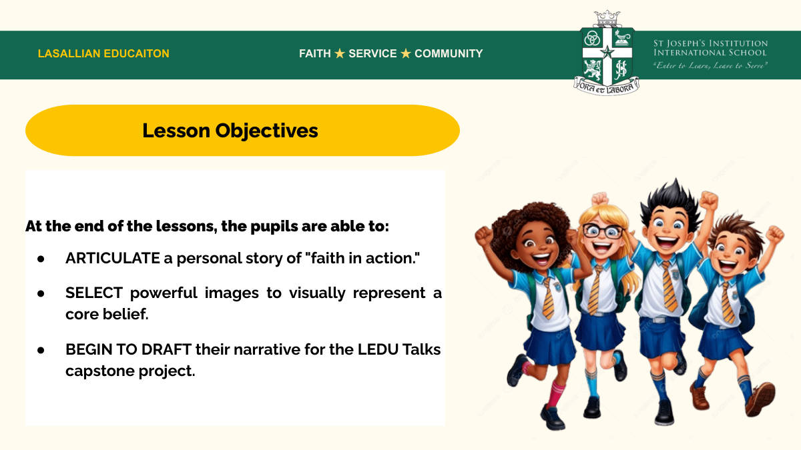
9쪽 · 수업 목표
● 자신의 행동으로 드러난 믿음 이야기를 말로 표현한다.
● 핵심 신념을 시각적으로 나타낼 힘 있는 이미지를 고른다.
● LEDU Talks 마무리 과제에 쓸 자신의 이야기 초안을 쓰기 시작한다.
수업 목표
라살 교육
믿음 ★ 봉사 ★ 공동체
이 쪽은 수업이 끝난 뒤 학생이 할 수 있어야 하는 세 가지를 적은 목표 쪽이다.
세 목표는 이야기 말하기 → 이미지 고르기 → 초안 쓰기 순서로, 마지막 LEDU Talks 발표 과제로 이어진다.
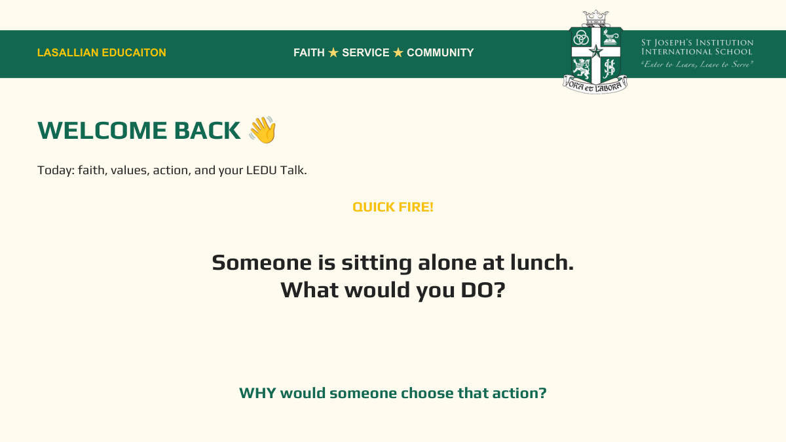
10쪽 · 믿음이란 무엇인가 — 시작
믿음 ★ 봉사 ★ 공동체
다시 만나 반갑다 👋
오늘: 믿음, 가치, 행동, 그리고 너의 LEDU 발표.
빠르게 답하기!
누군가 점심시간에 혼자 앉아 있다.
너라면 무엇을 하겠는가?
왜 누군가는 그런 행동을 택하겠는가?
라살리안 교육의 세 기둥은 믿음·봉사·공동체이며, 이 수업의 뼈대가 된다.
혼자 앉은 친구 상황을 두고 '무엇을 할 것인가'와 '왜 그렇게 하는가'를 나눠서 묻는다 — 행동과 그 행동의 이유(가치)를 구분하는 것이 이 쪽의 핵심이다.
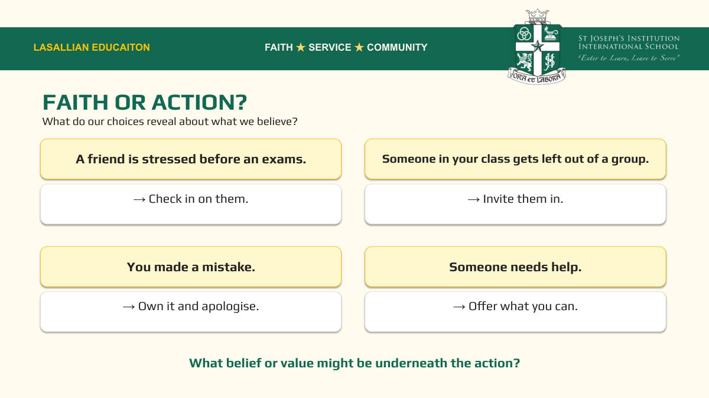
11쪽 · 믿음인가 행동인가
믿음 ★ 봉사 ★ 공동체
믿음인가 행동인가?
우리의 선택은 우리가 무엇을 믿는지에 대해 무엇을 드러내는가?
친구가 시험을 앞두고 스트레스를 받고 있다.
→ 그 친구의 안부를 살핀다.
반의 누군가가 모둠에서 따돌림을 당한다.
→ 그 사람을 안으로 불러들인다.
내가 실수를 했다.
→ 그것을 인정하고 사과한다.
누군가 도움이 필요하다.
→ 내가 줄 수 있는 것을 내어 준다.
그 행동 아래에는 어떤 믿음이나 가치가 깔려 있을까?
이 쪽은 라살리안 교육의 세 기둥인 믿음·봉사·공동체를 내걸고, 믿음이 말이 아니라 선택으로 드러난다고 묻는다.
네 가지 상황(시험 앞둔 친구·따돌림당한 친구·내 실수·도움이 필요한 사람)마다 짝이 되는 행동을 붙여 두고, 마지막에 그 행동 밑에 깔린 믿음이나 가치가 무엇인지 스스로 찾게 한다.
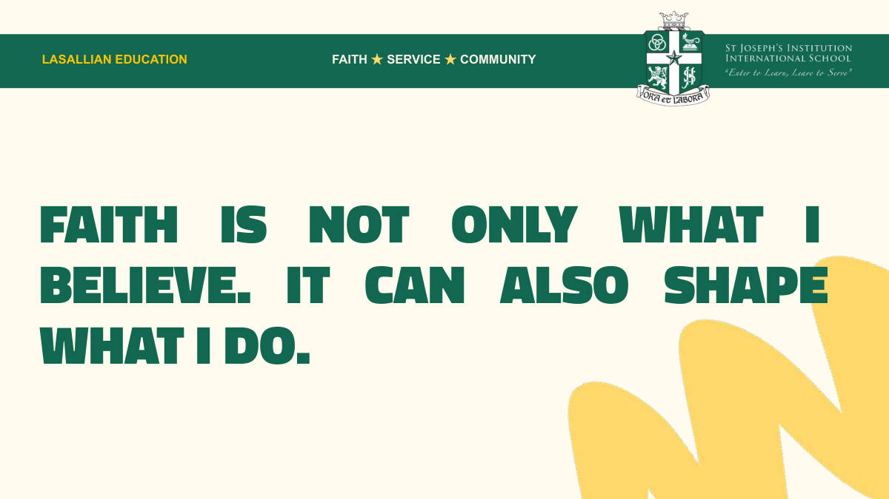
12쪽 · 믿음은 행동으로 드러난다
믿음은 내가 하는 일도 만들어 갈 수 있다.
라살리안 교육
믿음 ★ 봉사 ★ 공동체
믿음을 머릿속 생각으로만 두지 않고, 실제 행동을 만드는 힘으로 본다는 것이 이 쪽의 핵심이다.
라살리안 교육이 내세우는 세 기둥은 믿음(faith)·봉사(service)·공동체(community)다.
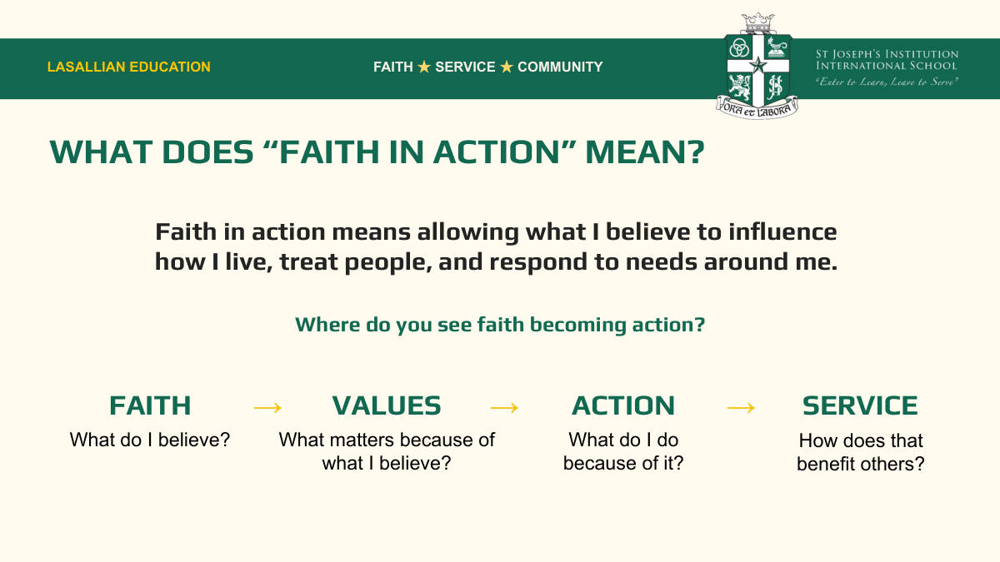
13쪽 · 믿음이 행동이 되는 길
믿음 ★ 봉사 ★ 공동체
"행동하는 믿음"이란 무엇을 뜻하는가?
믿음이 행동이 되는 곳을 어디에서 보는가?
행동하는 믿음이란, 내가 믿는 것이 내가 사는 방식, 사람을 대하는 방식, 그리고 내 주변의 필요에 응답하는 방식에 영향을 미치도록 허락하는 것이다.
믿음 → 나는 무엇을 믿는가?
가치 → 내가 믿는 것 때문에 무엇이 중요해지는가?
행동 → 그것 때문에 나는 무엇을 하는가?
봉사 → 그것이 다른 사람들에게 어떻게 도움이 되는가?
라살리안 교육의 세 기둥은 믿음(faith)·봉사(service)·공동체(community)다.
믿음 → 가치 → 행동 → 봉사의 네 단계가 화살표로 이어지며, 각 단계마다 스스로에게 던지는 질문이 붙어 있다.
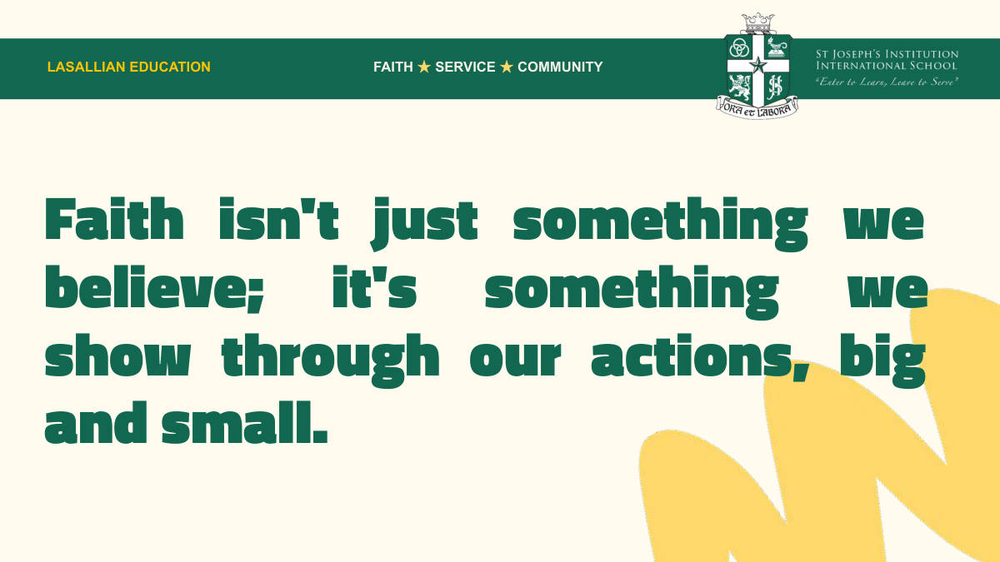
14쪽 · 믿음은 행동으로 드러난다
믿음은 크고 작은 행동을 통해 우리가 보여주는 것이다.
라살리안 교육
믿음 ★ 봉사 ★ 공동체
믿음은 마음속 생각에 그치지 않고 행동으로 드러나는 것이라고 말한다.
라살리안 교육의 세 기둥은 믿음·봉사·공동체다.
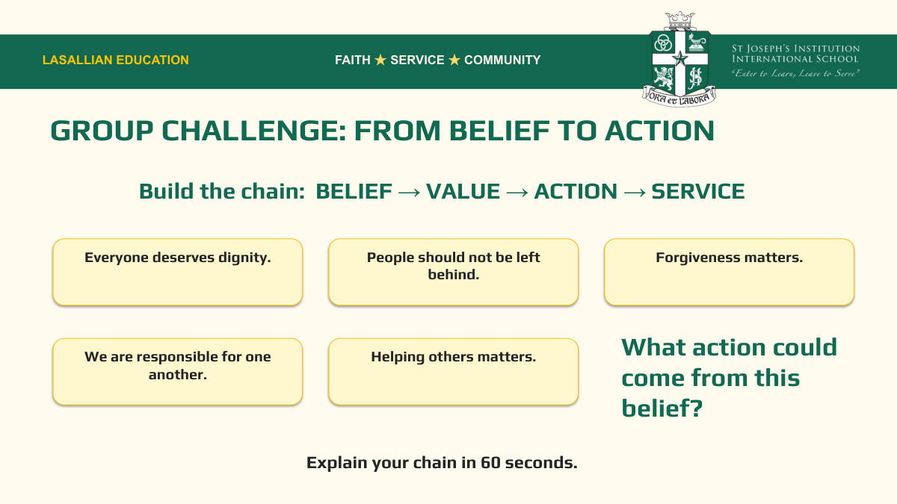
15쪽 · 믿음에서 행동으로
믿음 ★ 봉사 ★ 공동체
모둠 과제: 믿음에서 행동으로
사슬을 만들어라: 믿음 → 가치 → 행동 → 봉사
모든 사람은 존엄을 누릴 자격이 있다.
사람은 뒤에 남겨져서는 안 된다.
용서는 중요하다.
우리는 서로에게 책임이 있다.
남을 돕는 일은 중요하다.
너의 사슬을 60초 안에 설명하라.
이 믿음에서 어떤 행동이 나올 수 있는가?
믿음 → 가치 → 행동 → 봉사 순서로 이어지는 사슬을 만드는 것이 이 쪽의 과제다.
제시된 다섯 가지 믿음(존엄, 뒤처지지 않게 함, 용서, 서로에 대한 책임, 남을 돕기) 중에서 골라 사슬을 만들고 60초 안에 설명해야 한다.
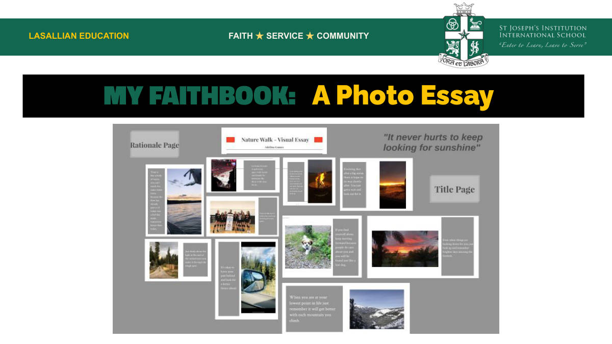
16쪽 · 라살리안 교육과 나의 신앙책
신앙 ★ 봉사 ★ 공동체
나의 신앙책: 사진 에세이
라살리안 교육이 내세우는 세 가지 기둥은 신앙·봉사·공동체다.
이 쪽은 사진으로 신앙을 표현하는 '사진 에세이' 과제를 여는 쪽이다.
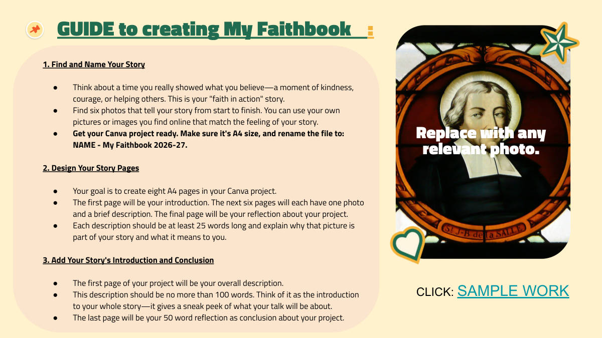
17쪽 · 페이스북 만들기 안내
관련 있는 사진으로 바꿔 넣어라.
1. 이야기를 찾고 이름 붙이기
네가 믿는 바를 정말로 드러냈던 때를 떠올려라 — 친절, 용기, 또는 남을 도운 순간.
이것이 너의 "믿음의 실천(faith in action)" 이야기다.
처음부터 끝까지 이야기를 전하는 사진 여섯 장을 찾아라.
직접 찍은 사진을 써도 되고, 이야기의 느낌에 맞는 인터넷 이미지를 써도 된다.
Canva 작업을 준비해라.
반드시 A4 크기로 하고, 파일 이름을 NAME - My Faithbook 2026-27 으로 바꿔라.
2. 이야기 쪽 디자인하기
목표는 Canva에서 A4 여덟 쪽을 만드는 것이다.
첫 쪽은 소개다.
다음 여섯 쪽은 각각 사진 한 장과 짧은 설명을 담는다.
마지막 쪽은 이 과제에 대한 성찰이다.
설명은 각각 최소 25단어여야 하며, 그 사진이 왜 네 이야기의 일부인지, 그것이 너에게 어떤 의미인지를 설명해야 한다.
3. 소개와 결론 넣기
첫 쪽은 전체 설명이 된다.
이 설명은 100단어를 넘지 않아야 한다.
이야기 전체의 소개라고 생각해라 — 네 발표가 무엇에 대한 것인지 미리 살짝 보여 주는 것이다.
마지막 쪽은 결론으로 쓰는 50단어 성찰이다.
클릭: SAMPLE WORK(예시 작품)
전체 구성이 정해져 있다 — A4 여덟 쪽: 소개 1쪽 + 사진 6쪽 + 성찰 1쪽.
글자 수 조건을 지켜야 한다 — 사진 설명은 각각 25단어 이상, 소개는 100단어 이내, 마지막 성찰은 50단어다.
파일 이름은 NAME - My Faithbook 2026-27 형식으로 바꾸고, Canva에서 A4 크기로 설정한다.
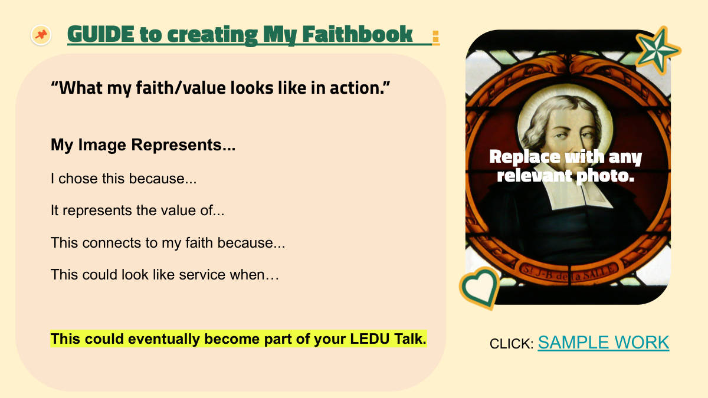
18쪽 · 나의 신앙북 만들기 안내
아무 관련 있는 사진으로 바꿔 넣어라.
"내 신앙/가치가 행동으로 나타나면 어떤 모습인가."
내 이미지가 나타내는 것은...
내가 이것을 고른 이유는...
이것은 ...라는 가치를 나타낸다.
이것이 내 신앙과 이어지는 이유는...
이것은 ...할 때 섬김의 모습일 수 있다.
이것은 나중에 네 LEDU Talk의 일부가 될 수 있다.
클릭: 예시 작품
사진 한 장을 고르고 다섯 개의 말머리(나타내는 것·고른 이유·가치·신앙과의 연결·섬김의 모습)를 이어서 채우는 방식이다.
여기서 만든 내용이 나중에 LEDU Talk 발표로 이어진다.
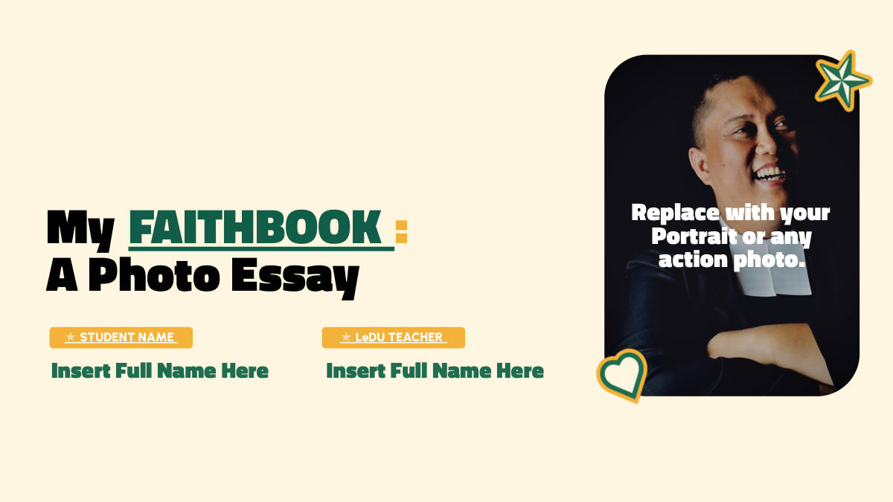
19쪽 · 내 믿음 이야기 표지
✯ 학생 이름
나의 페이스북이 아니라 FAITHBOOK(믿음책) : 사진 에세이
이 자리를 너의 초상 사진이나 아무 활동 사진으로 바꾼다.
이름을 여기에 쓴다.
✯ LeDU 선생님
학생 이름·선생님 이름·사진을 직접 채워 넣는 과제 표지 쪽이다
FAITHBOOK은 Faith(믿음)와 Facebook을 합친 말로, 사진으로 자기 믿음을 보여주는 Photo Essay(사진 에세이) 과제다
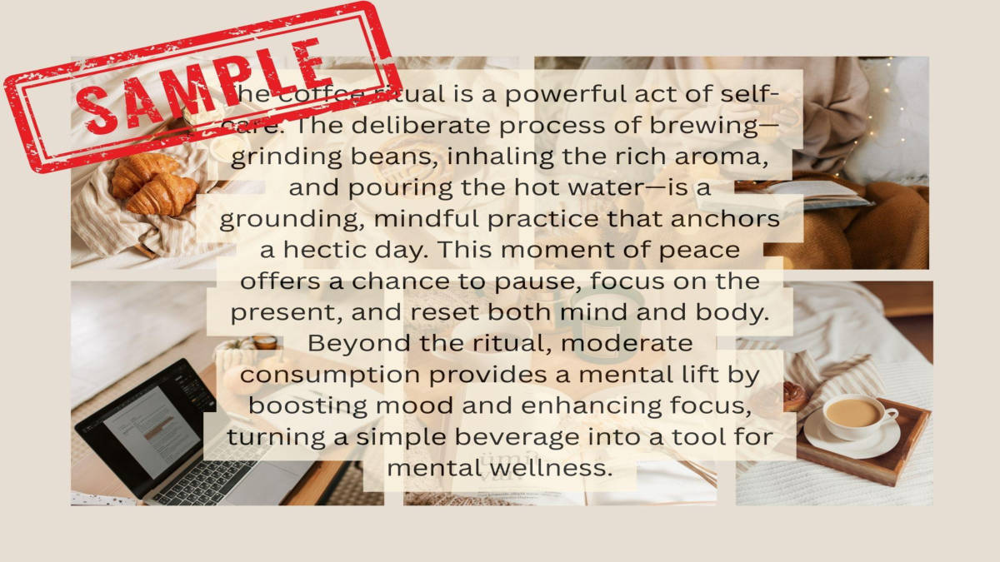
20쪽 · 빈 쪽
이 쪽은 글자가 없는 빈 쪽이다.
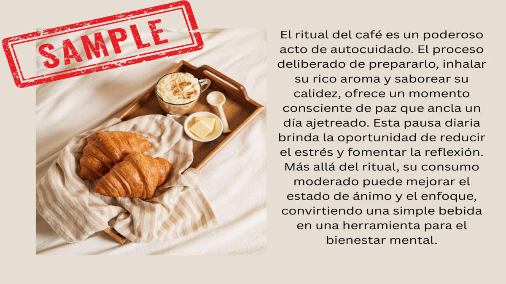
21쪽 · 글자 없는 쪽
이 쪽에는 읽을 글이 없으므로 앞뒤 쪽의 흐름을 이어서 보면 된다.
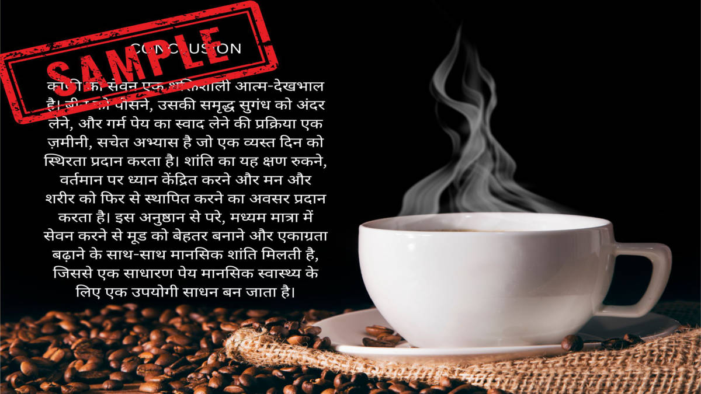
22쪽 · 빈 쪽
이 쪽에는 글자가 없어 옮길 내용이 없다.
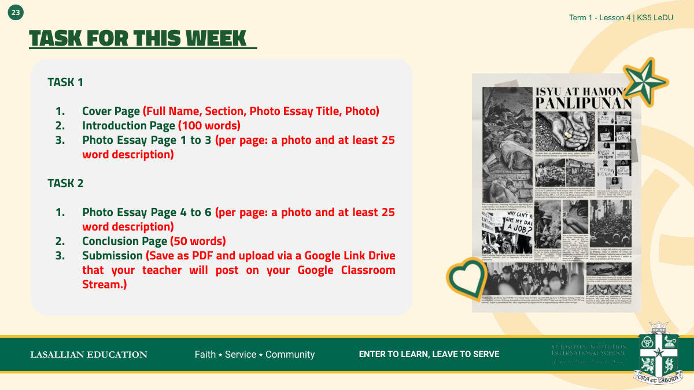
23쪽 · 이번 주 과제 안내
배우기 위해 들어오고, 봉사하기 위해 떠난다
믿음 ⭑ 봉사 ⭑ 공동체
1학기 - 4과 | KS5 LeDU
과제 1
1. 표지(전체 이름, 반, 포토 에세이 제목, 사진)
2. 서론 쪽 (100단어)
3. 포토 에세이 1쪽~3쪽 (쪽마다: 사진 한 장과 최소 25단어 설명)
과제 2
1. 포토 에세이 4쪽~6쪽 (쪽마다: 사진 한 장과 최소 25단어 설명)
2. 결론 쪽 (50단어)
3. 제출 (PDF로 저장해, 선생님이 구글 클래스룸 스트림에 올릴 구글 드라이브 링크로 올린다.)
이번 주 과제
포토 에세이는 표지·서론(100단어)·사진 6쪽·결론(50단어)으로 이루어지며, 사진 쪽마다 설명이 최소 25단어 필요하다
제출은 PDF로 저장해 구글 클래스룸 스트림에 올라온 구글 드라이브 링크에 업로드하는 방식이다
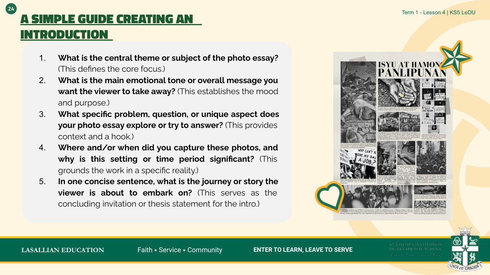
24쪽 · 사진 에세이 서문 쓰는 법
배우러 들어와서, 섬기러 나간다
믿음 ⭑ 봉사 ⭑ 공동체
1학기 - 4과 | KS5 LeDU
서문(introduction)을 쓰는 간단한 안내
1. 이 사진 에세이의 중심 주제 또는 소재는 무엇인가? (이것이 핵심 초점을 정한다.)
2. 보는 사람이 가져가길 바라는 주된 감정의 결이나 전체 메시지는 무엇인가? (이것이 분위기와 목적을 세운다.)
3. 내 사진 에세이가 탐구하거나 답하려는 구체적인 문제·질문·독특한 점은 무엇인가? (이것이 맥락과 흥미를 끄는 고리를 준다.)
4. 이 사진들을 어디서, 언제 찍었으며 그 장소나 시기가 왜 중요한가? (이것이 작품을 구체적인 현실에 뿌리내리게 한다.)
5. 한 문장으로, 보는 사람이 이제 떠날 여정 또는 이야기는 무엇인가? (이것이 서문의 마무리 초대이자 주제문(thesis statement)이 된다.)
사진 에세이 서문은 다섯 가지 질문에 답하는 방식으로 쓴다 — 주제, 감정의 결, 탐구할 질문, 장소와 시기, 그리고 한 문장 요약이다.
5번의 한 문장이 서문의 결론이자 주제문(thesis statement) 역할을 하므로 앞의 1~4번 답을 압축해 담아야 한다.
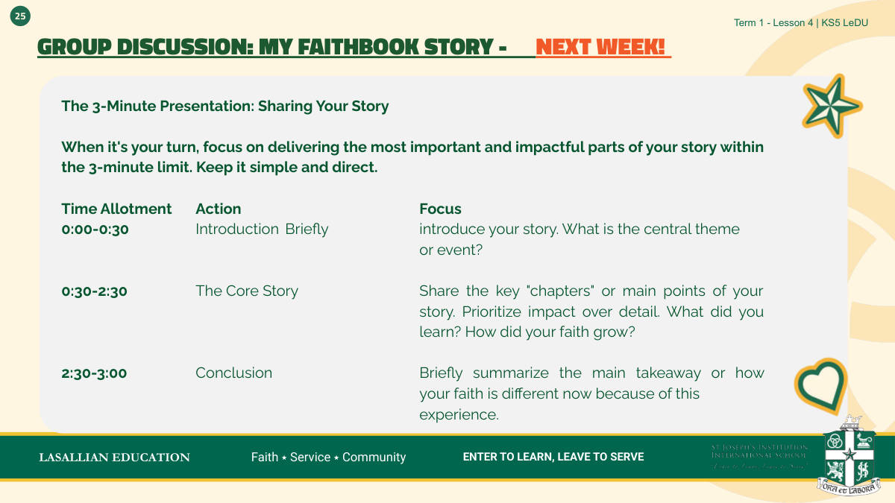
25쪽 · 3분 발표 진행 방법
믿음 ⭑ 봉사 ⭑ 공동체
1학기 4과 | KS5 LeDU
3분 발표: 내 이야기 나누기
자기 차례가 되면 3분 안에 자기 이야기에서 가장 중요하고 인상 깊은 부분을 전하는 데 집중한다.
간단하고 분명하게 한다.
시간 배분 / 할 일 / 초점
0:00-0:30 — 도입: 자기 이야기를 짧게 소개한다. 중심 주제나 사건이 무엇인가?
0:30-2:30 — 본 이야기: 이야기의 핵심 '장'이나 주요 내용을 나눈다. 세부 설명보다 인상(전달력)을 우선한다. 무엇을 배웠는가? 믿음이 어떻게 자랐는가?
2:30-3:00 — 마무리: 핵심 교훈, 또는 이 경험 때문에 지금 자기 믿음이 어떻게 달라졌는지 짧게 정리한다.
모둠 토론: 나의 페이스북(믿음책) 이야기 — 다음 주!
3분 발표는 도입 30초, 본 이야기 2분, 마무리 30초로 시간이 정해져 있다.
본 이야기에서는 세부 설명을 늘어놓기보다 배운 점과 믿음이 자란 과정을 전하는 것이 우선이다.
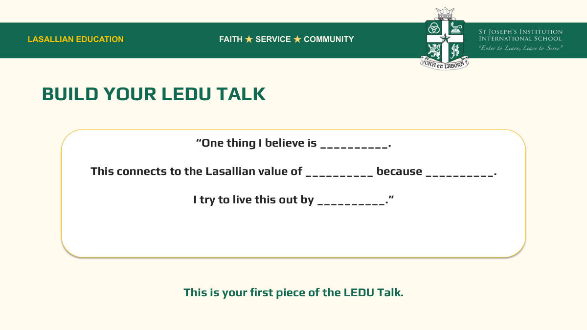
27쪽 · LEDU 토크 첫 조각 만들기
믿음 ★ 봉사 ★ 공동체
LEDU 토크를 만들어 보자
"내가 믿는 한 가지는 __________이다.
이것은 __________이라는 라살리안 가치와 연결된다. 왜냐하면 __________이기 때문이다.
나는 __________함으로써 이것을 실천하며 산다."
이것이 네 LEDU 토크의 첫 번째 조각이다.
라살리안 교육의 세 가지 가치는 믿음·봉사·공동체다.
빈칸 네 개를 채우는 틀이다 — 믿는 것 하나 / 연결되는 라살리안 가치 / 그 이유 / 실천 방법 순서로 쓴다.
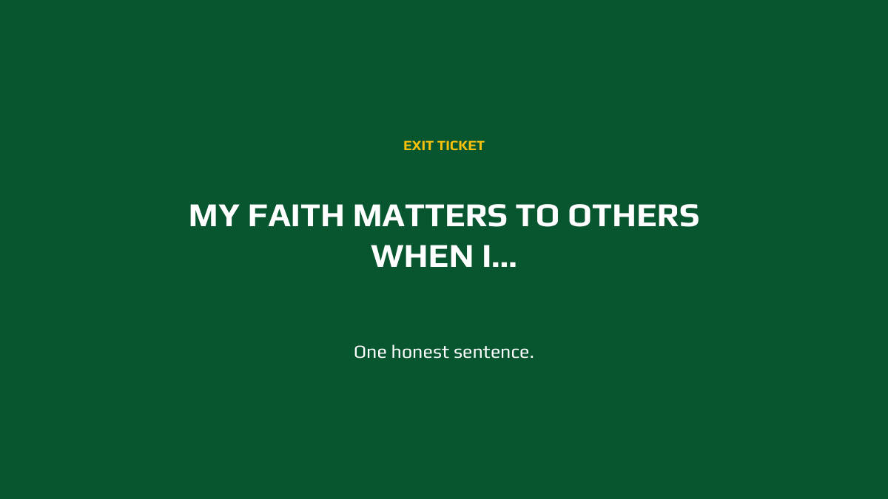
28쪽 · 나가기 티켓: 믿음이 남에게 주는 영향
나가기 티켓
MY FAITH MATTERS TO OTHERS WHEN I…
내 믿음이 다른 사람에게 중요해지는 때는 내가 …할 때다.
One honest sentence.
솔직한 문장 하나로 쓴다.
수업을 마치며 내는 나가기 티켓(EXIT TICKET)이다.
주어진 문장을 이어서 솔직한 한 문장으로만 완성하는 것이 과제다.
29쪽 · 믿음을 행동으로
Unit 1 | Term 1 | Lesson 4A
라살리안 교육
믿음 ★ 봉사 ★ 공동체
Br. Carlo FSC
나의 개인적 믿음은 내가 다른 사람들을 위해 행동하고 나의 공동체를 섬기도록 어떻게 이끄는가?
이 쪽은 Lesson 4A '행동하는 믿음'의 표지 쪽이다.
라살리안 교육의 세 기둥은 믿음·봉사·공동체이며, 이 쪽의 핵심 질문은 개인의 믿음이 남을 위한 행동과 공동체 섬김으로 어떻게 이어지는가이다.

30쪽 · 내 믿음 이야기 표지
✯ 학생 이름
나의 믿음책(FAITHBOOK): 사진 에세이
여기를 당신의 초상 사진이나 아무 활동 사진으로 바꾸시오.
이름을 여기에 적으시오
✯ LeDU 선생님
과제물 표지 틀이다. 학생 이름과 선생님 이름을 적고, 표시된 자리에 자기 사진을 넣어 완성한다.
과제 제목은 '나의 믿음책: 사진 에세이'이며, 사진으로 엮는 글이라는 뜻이다.
이 자료는 Lesson 2: The Heart of Service(봉사의 마음)라는 단원의 수업용 슬라이드다. 라살리안 성찰(Lasallian Reflection)은 라살(La Salle) 학교들이 공유하는 가치 교육 시간으로, 학생이 자기 삶과 태도를 되돌아보게 하는 수업이다.
슬라이드 안에는 WHITEBOARD(화이트보드)라는 활동 영역과, 이름이 적힌 표(table)들이 여러 개 들어 있다. John, Marcus, Donnacha, William, Ben, Jeffery, Da Feng, Ryan 같은 반 학생 이름이 칸마다 배치되어 있고, 그 옆에는 빈 칸이 함께 놓여 있다. 이런 구성은 각자 자기 칸에 생각이나 답을 적어 넣는 모둠·개인 활동 형식이다.
즉 이 자료는 읽고 외우는 지식 자료라기보다, 수업 시간에 직접 써 넣으며 참여하는 활동 슬라이드에 가깝다. 자기 이름이 있는 칸을 찾아 그 자리에 답을 적는 방식이므로, 수업 중 비어 있는 자기 칸을 채우는 것이 핵심이다.
✍️ 꼭 알아야 하는 것
- 단원 이름과 뜻: The Heart of Service는 '봉사의 마음'이며, 이 수업은 Lasallian Reflection(라살리안 성찰) 시간의 일부다.
- 슬라이드의 화이트보드(whiteboard) 표에는 학생 이름별 칸이 있어, 자기 이름 칸에 자신의 생각을 적어 넣는 활동이 포함되어 있다.
이 수업의 학습목표(LO)는 두 가지다. 하나는 라살리안 교육(Lasallian Education)의 기대사항과 규칙(expectations and routines)을 이해하는 것이고, 다른 하나는 올해 자신이 기르고 싶은 가치와 태도(values and qualities)를 스스로 생각해 보는 것이다. 학교 표어는 'Enter to Learn, Leave to Serve'(배우러 들어와, 봉사하러 나간다)이고 핵심 가치는 Faith(믿음)·Service(봉사)·Community(공동체) 세 가지다.
첫 활동은 Lasallian Bingo다. 교실을 돌아다니며 여러 친구와 이야기해서 16칸 문장 전부에 해당하는 사람 이름을 적고, 그 답에 대해 후속 질문(follow-up question)을 하나 더 해서 무슨 뜻인지 이해해야 한다. 학생이 16명 이상인 반은 칸마다 다른 사람을 써야 하고, 16명보다 적은 반은 같은 사람을 최대 두 번까지만 쓸 수 있다. 다 채우면 그 종이를 연습장(exercise book)에 붙인다.
교실 규칙의 뼈대는 3Es — Enter(들어오기)·Engage(참여하기)·Exit(나가기)다. Enter는 밖에서 조용히 줄을 서서 선생님께 인사하고, 차분히 들어와 자리에 앉아 가방을 바닥에 두고, LeDU 연습장을 책상에 꺼내 수업 제목과 날짜를 쓴 뒤, 조용히 스타터 활동을 시작하는 순서다. Exit는 하던 일을 멈추고 선생님 지시를 듣고, 물건을 정리하고, 의자를 밀어 넣은 뒤 조용히 의자 뒤에 서서 해산 허락을 기다리는 것까지다.
Engage에는 세부 규칙이 여러 개 있다. 받은 코드로 이 LeDU 수업의 구글 클래스룸(Google Classroom)에만 들어가야 하고(다른 반에 잘못 들어가지 않도록 확인), 7~10학년은 연습장을 꼭 가지고 다니며 표지에 이름을 쓴다. 손 신호(hand signals)는 손가락 하나(☝)면 화장실, 둘(✌)이면 질문·발표이며, 화장실은 한 번에 한 명만 간다. 가방은 교실 뒤나 책상 아래에 두고 복도에 두면 안 된다.
규칙을 어겼을 때는 리셋 버튼(Reset Button) 단계를 밟는다. 먼저 반 전체에 부드럽게 말로 알려주고(Verbal Reminder), 그다음은 조용히 따로 이야기하고(Private Chat), 그래도 안 되면 집에 연락(Contact Home)해서 가정과 함께 돕는 방식이다. 벌이 아니라 다시 시작하게 도와주는 절차라는 점이 핵심이다.
✍️ 꼭 알아야 하는 것
- 3Es(Enter·Engage·Exit) 각 단계에서 해야 할 행동 순서 — 특히 들어올 때 연습장에 제목과 날짜 쓰기, 나갈 때 해산 허락 전까지 자리 뒤에 서 있기.
- 손 신호 두 가지(☝ 화장실 / ✌ 질문·발표)와 가방·연습장 보관 규칙.
📚 이 자료의 핵심 단어

1쪽 · 올해 나는 어떤 학생이 되고 싶은가
배우러 들어와, 섬기러 나간다
믿음 ⭑ 봉사 ⭑ 공동체
제목: 올해 나는 어떤 학생이 되고 싶은가?
학습 목표(LO): 라살리안 교육의 기대와 규칙을 이해한다. 올해 학생으로서 기르고 싶은 가치와 자질을 돌아본다.
BMDL 자리 배치도
(학생들이 교실에 들어올 때 화면에 띄운다)
이 수업의 뼈대는 라살리안 교육의 세 낱말, 믿음·봉사·공동체다.
이 시간에 할 일은 두 가지다. 학교의 기대와 규칙을 이해하는 것, 그리고 올해 어떤 학생이 되고 싶은지 스스로 돌아보는 것이다.

2쪽 · 라살리안 빙고 활동 안내
배우러 들어와, 섬기러 나간다
믿음 ⭑ 봉사 ⭑ 공동체
제목: 올해 나는 어떤 학생이 되고 싶은가?
학습 목표: 라살리안 교육의 기대와 규칙을 이해한다. 올해 학생으로서 기르고 싶은 가치와 자질을 돌아본다.
라살리안 빙고
1. 교실을 돌아다니며 여러 친구와 이야기한다.
2. 16개 문장을 모두 채운다.
3. 각 문장에 맞는 사람의 이름을 적는다.
4. 추가 질문을 해서 그 친구의 답이나 말한 내용을 이해한다.
5. 학생이 16명 이상인 반에서는 문장마다 다른 사람을 쓴다. 16명보다 적은 반에서는 같은 사람을 최대 두 번까지 쓸 수 있다.
6. 종이 전체가 다 찰 때까지 계속한다.
7. 다 하면 종이를 연습장(exercise book)에 붙인다.
연습장에:
누군가에 대해 알게 된 흥미로운 점은 무엇인가?
올해 라살리안 교육에서 무엇을 얻기를 바라는가?
빙고 칸마다 조건에 맞는 친구의 이름을 적고, 반드시 추가 질문까지 해서 그 답의 내용을 이해해야 한다.
반 인원이 16명 이상이면 이름이 겹치면 안 되고, 16명 미만이면 같은 사람을 두 번까지만 쓸 수 있다.

3쪽 · 라살리안 교육 소개
배우러 들어와서, 섬기러 나간다
믿음 ⭑ 봉사 ⭑ 공동체
환영합니다!
라살리안 학교의 표어는 '배우러 들어와 섬기러 나간다'로, 배운 것을 남을 위해 쓰라는 뜻이다.
이 학교가 내세우는 세 가지 가치는 믿음(Faith)·봉사(Service)·공동체(Community)다.

4쪽 · 올해 나는 어떤 학생이 되고 싶은가
배우기 위해 들어와서, 섬기기 위해 나간다
믿음 ⭑ 봉사 ⭑ 공동체
(1) ✅ 도달
나는 교실의 기대와 가치 중 나에게 중요한 것을 찾아낼 수 있다.
(2) 🚀 넘어섬
나는 특정 가치가 왜 나에게 학생으로서 중요한지 설명할 수 있다.
(3) 👑 숙달
나는 나의 가치를 올해 내가 할 수 있는 구체적인 행동과 선택에 연결할 수 있다.
제목: 올해 나는 어떤 학생이 되고 싶은가?
학습목표(LO): 라살리안 교육의 기대와 규칙(루틴)을 이해한다; 올해 학생으로서 기르고 싶은 가치와 자질을 돌아본다.
올해 나는 어떤 학생이 되고 싶은가?
학습 단계가 3칸으로 나뉜다 — 찾아내기(도달) → 왜 중요한지 설명하기(넘어섬) → 구체적 행동에 연결하기(숙달). 뒤로 갈수록 요구가 높아진다.
학교의 세 가지 핵심 가치는 믿음·봉사·공동체이고, 표어는 '배우기 위해 들어와서, 섬기기 위해 나간다'다.

5쪽 · 1과 시작 — 라살 교육 소개
배우기 위해 들어오고, 섬기기 위해 나간다.
믿음 ⭑ 봉사 ⭑ 공동체
제목: 나는 올해 어떤 학생이 되고 싶은가?
학습목표(LO): 라살 교육의 기대사항과 규칙(루틴)을 이해한다. 올해 학생으로서 기르고 싶은 가치와 자질을 되돌아본다.
3E: Enter(들어가기), Engage(참여하기), Exit(나가기)
교실 규칙과 기대사항
이 수업의 목표는 두 가지다. 학교의 기대사항·규칙을 이해하는 것, 그리고 올해 어떤 학생이 되고 싶은지 스스로 생각해 보는 것이다.
라살 교육의 세 가지 핵심 가치는 믿음(Faith)·봉사(Service)·공동체(Community)이며, 수업 진행의 틀은 3E(Enter·Engage·Exit)다.

6쪽 · 3E — 들어올 때
배우러 들어와, 섬기러 나간다
믿음 ⭑ 봉사 ⭑ 공동체
제목: 나는 올해 어떤 학생이 되고 싶은가?
학습목표(LO): 라살리안 교육의 기대사항과 규칙적인 절차를 이해한다. 올해 학생으로서 기르고 싶은 가치와 자질을 돌아본다.
3E: 우리가 들어오는 방법
1. 밖에서 조용히 줄을 선다. 선생님께 인사한다.
2. 차분하게 들어와 자리로 가고, 가방은 바닥에 둔다.
3. LeDU 연습장을 책상 위에 놓는다. 수업 제목과 날짜를 쓴다.
4. 스타터 활동을 조용히 시작한다.
교실에 들어오는 순서가 4단계로 정해져 있다 — 줄서기·인사 → 차분히 착석·가방은 바닥 → 연습장 꺼내 제목과 날짜 쓰기 → 조용히 스타터 활동 시작.
이 수업의 목표는 라살리안 교육의 기대사항과 절차를 이해하고, 올해 기르고 싶은 가치와 자질을 스스로 돌아보는 것이다.

7쪽 · 책과 가방 규칙
배우러 들어와, 섬기러 나간다
믿음 ⭑ 봉사 ⭑ 공동체
제목: 나는 올해 어떤 학생이 되고 싶은가?
학습목표(LO): 라살리안 교육의 기대사항과 규칙을 이해한다. 올해 학생으로서 기르고 싶은 가치와 자질을 돌아본다
책과 가방
1. 학생들이 사물함을 쓰도록 권한다.
2. 연습장(공책)은 교실에 둔다. 단 특정 과제 때문에 집으로 가져가야 하거나 반이 다른 선생님과 나뉘는 경우는 예외다.
3. 가방은 교실 안으로 가지고 들어와 뒤쪽이나 책상 밑에 둔다.
4. 가방을 복도에 내놓아 두면 안 된다.
연습장은 교실에 두는 것이 원칙이고, 과제나 분반 수업 때만 집에 가져갈 수 있다.
가방은 교실 뒤쪽이나 책상 밑에 두며, 복도에 두는 것은 금지다.

8쪽 · 구글 클래스룸 가입하기
배우러 들어와, 섬기러 나간다
믿음 ⭑ 봉사 ⭑ 공동체
제목: 나는 올해 어떤 학생이 되고 싶은가?
학습목표: 라살리안 교육의 기대사항과 규칙을 이해한다. 올해 학생으로서 기르고 싶은 가치와 자질을 되돌아본다
3E: 우리가 참여하는 방법
구글 클래스룸 💻
1. 받은 코드를 써서, 이 LeDU 수업의 구글 클래스룸에만 가입한다.
2. 맞는 반에 들어가는지 다시 확인한다. 다른 반에는 절대 가입하지 않는다.
선생님이 준 코드로 이 LeDU 수업의 구글 클래스룸에만 가입한다
가입 전에 반이 맞는지 두 번 확인하고, 다른 반에는 들어가지 않는다

9쪽 · 라살리안 교육과 3E — 연습장 규칙
배우기 위해 들어오고, 섬기기 위해 나간다
믿음 ⭑ 봉사 ⭑ 공동체
제목: 올해 나는 어떤 학생이 되고 싶은가?
학습목표(LO): 라살리안 교육의 기대사항과 규칙적인 생활방식을 이해한다. 올해 학생으로서 기르고 싶은 가치와 자질을 돌아본다.
3E: 우리가 참여하는 방법
연습장(Exercise Books)
1. Years 7-10 LeDU 학생에게 해당한다. 이 학생들은 반드시 자신의 연습장을 갖고 있어야 한다.
2. 앞표지에 자기 이름을 쓴다.
학교의 세 가지 핵심 가치는 믿음·봉사·공동체다.
7~10학년 LeDU 학생은 연습장을 반드시 챙기고, 앞표지에 이름을 써야 한다.

10쪽 · 라살 교육과 손 신호
배우러 들어와, 섬기러 나간다
믿음 ⭑ 봉사 ⭑ 공동체
제목: 나는 올해 어떤 학생이 되고 싶은가?
학습목표: 라살 교육의 기대사항과 규칙을 이해한다. 올해 학생으로서 기르고 싶은 가치와 자질을 돌아본다.
3E: 우리가 참여하는 방식
손 신호 ✋
1. ☝ 화장실: 수업을 방해하지 않고 조용히 요청한다.
2. ✌ 질문/발표: 자기 의견을 말하는 방법이다.
학교 표어는 '배우러 들어와, 섬기러 나간다'이고, 핵심 가치는 믿음·봉사·공동체 세 가지다.
말로 끼어들지 않고 손가락 신호로 표시한다. 손가락 하나는 화장실, 둘은 질문이나 발표다.

11쪽 · 화장실 이용 규칙
배우러 들어와, 섬기러 나간다
믿음 ⭑ 봉사 ⭑ 공동체
제목: 올해 나는 어떤 학생이 되고 싶은가?
학습목표(LO): 라살리안 교육의 기대사항과 일과를 이해한다. 올해 학생으로서 기르고 싶은 가치와 자질을 돌아본다.
화장실 허가
1. 학생은 한 번에 한 명씩만 화장실에 가게 한다.
2. 쉬는 시간 앞뒤 15분 이내라면, 학생이 정말 가야 하는지 판단하거나 쉬는 시간을 어떻게 쓰는지 학생과 이야기를 나눈다.
3. 시간대를 살핀다 — 학생이 그저 '시간을 때우거나' 어려운 과제를 피하려는 것 같으면 기다리라고 한다.
4. 수업 중 일을 피하려고 화장실을 자주 쓰는 학생을 눈여겨본다. 걱정이 되기 시작하면 ISAMS에 기록한다.
화장실은 한 번에 한 명만 가고, 쉬는 시간 앞뒤 15분 이내면 선생님이 판단해서 기다리게 할 수 있다.
과제를 피하려고 화장실을 자주 쓰면 선생님이 ISAMS(학교 기록 시스템)에 기록한다.

12쪽 · 3E와 리셋 버튼
배우러 들어와서, 섬기러 나간다
신앙 ⭑ 봉사 ⭑ 공동체
제목: 나는 올해 어떤 학생이 되고 싶은가?
학습목표(LO): 라살리안 교육의 기대사항과 일과를 이해한다. 올해 학생으로서 기르고 싶은 가치와 자질을 돌아본다.
3E: 우리가 참여하는 방법
리셋 버튼 🔄
★말로 하는 알림: 친절하고 전체를 향한 학급 알림이다.
★따로 이야기: 조용하고 예의를 갖춘 대화다.
★집에 연락: 너의 성공을 위해 가족과 손잡는 것이다.
문제가 생기면 바로 벌을 주는 것이 아니라 '리셋 버튼'을 눌러 다시 시작하게 하는 방식이다.
알림은 세 단계로 올라간다 — 말로 하는 알림 → 따로 이야기 → 집에 연락이다.

13쪽 · 3E 규칙: 나가는 법
배우러 들어와서, 섬기러 나간다
믿음 ⭑ 봉사 ⭑ 공동체
제목: 나는 올해 어떤 학생이 되고 싶은가?
학습목표: 라살리안 교육의 기대사항과 규칙을 이해한다. 올해 학생으로서 기르고 싶은 가치와 자질을 돌아본다.
3E: 우리가 나가는 방법
★ 하던 일을 멈추고 선생님의 지시를 듣는다.
★ 준비물을 치우고 자기 자리를 정돈한다.
★ 의자를 밀어 넣고 그 뒤에 조용히 선다.
★ 나가라는 말을 들을 때까지 기다린다.
★ 감사 인사와 작별 인사를 한다.
3E 중 '나가기(Exit)' 단계다. 수업이 끝날 때 지켜야 할 다섯 가지 순서를 정해 놓았다.
마음대로 먼저 나가지 않는다. 자리를 정돈하고 의자 뒤에 조용히 선 뒤, 선생님이 보내 줄 때까지 기다린다.

14쪽 · 1학기 학습 성과와 일정
배우러 들어와, 섬기러 나간다 (Enter to Learn, Leave to Serve)
믿음 ⭑ 봉사 ⭑ 공동체
제목: 나는 올해 어떤 학생이 되고 싶은가?
학습목표(LO): 라살리안 교육의 기대와 일과를 이해한다; 올해 학생으로서 기르고 싶은 가치와 자질을 되돌아본다
1학기 - 11학년: 애드보커시(옹호) 봉사
학기말 학습 성과
1학기가 끝날 때까지 학생들은 청중을 교육하고, 참여시키고, 힘을 주는 윤리적이고 근거에 기반한 애드보커시 부스를 설계하고 실행하게 된다.
주요 이정표
❏ 모둠을 만든다.
❏ 초점을 맞춘 사회 문제를 고르고 조사한다.
❏ 핵심 메시지, 이야기, 행동 촉구(Call to Action)를 만든다.
❏ 애드보커시 부스를 완성하고 다듬는다.
❏ 실행하고 청중에게 준 영향을 되돌아본다.
중요한 날짜
★ 11주차: 10월 19일 주 — 제안서 승인
★ 16주차: 11월 23일 주 — 애드보커시 인식의 날 실행
★ 17~18주차: 11월 30일 및 12월 7일 주 — 성찰
1학기의 최종 결과물은 '애드보커시 부스'다. 윤리적이고 근거에 기반해야 하며, 청중을 교육·참여·역량강화하는 것이 목표다.
이정표는 모둠 구성 → 사회 문제 조사 → 핵심 메시지와 행동 촉구 개발 → 부스 완성 → 실행 및 성찰 순서로 진행된다.
날짜는 3개만 기억하면 된다. 10월 19일 주 제안서 승인, 11월 23일 주 실행, 11월 30일~12월 7일 주 성찰이다.

15쪽 · 1학기 봉사학습 과제 안내
배우러 들어와서, 섬기러 나간다
믿음 ⭑ 봉사 ⭑ 공동체
제목: 나는 올해 어떤 학생이 되고 싶은가?
학습목표: 라살리안 교육의 기대사항과 규칙을 이해한다. 올해 학생으로서 기르고 싶은 가치와 자질을 돌아본다.
1학기 - 12학년: 직접 봉사 학습
학기말 성과물: 1학기가 끝날 때까지 학생들은 윤리적이고, 근거에 기반하며, 바로 실행할 수 있는 직접 봉사 학습 프로젝트 제안서를 만들어 발표하게 된다.
주요 단계
❏ 필요한 것과 함께할 파트너를 찾는다
❏ 봉사 내용과 목표를 설계한다
❏ 자원과 평가 방법을 계획한다
❏ 제안서를 제출하고 발표한다
중요한 날짜
★ 14주차(11월 9일 주): 제안서 점검
★ 16주차(11월 23일 주): 최종 제출
★ 17주차(11월 30일 주): 제안서 발표
★ 18주차(12월 7일 주): 돌아보기
1학기 최종 결과물은 '직접 봉사 학습 프로젝트 제안서'이며, 윤리적·근거 기반·실행 가능이라는 세 조건을 갖춰야 한다.
제안서는 파트너 찾기 → 목표 설계 → 자원·평가 계획 → 제출·발표의 네 단계로 진행되고, 11월 9일 주 점검부터 12월 7일 주 돌아보기까지 날짜가 정해져 있다.

16쪽 · 1학기 목표와 주요 일정
배우러 들어와, 섬기러 나간다
믿음 ⭑ 봉사 ⭑ 공동체
제목: 나는 올해 어떤 학생이 되고 싶은가?
학습목표: 라살리안 교육의 기대와 규칙을 이해한다. 올해 학생으로서 기르고 싶은 가치와 자질을 돌아본다.
1학기 - 13학년: 직접 봉사 학습
학기말 성과
1학기가 끝날 때까지 학생들은 직접 봉사 학습의 두 번째 주기를 개선하고, 실행하고, 비판적으로 평가하게 된다.
그리하여 더 강한 리더십과 성찰적 성장을 보여주게 된다.
주요 단계
❏ 12학년 경험을 평가한다
❏ 제안서를 개선하고 변론한다
❏ 실행하고, 점검하고, 조정한다
❏ 영향을 평가하고 성찰한다
중요한 날짜
★ 11주차: 10월 19일 주 — 개선된 제안서 발표
★ 12~17주차: 10월 26일~11월 30일 주 — 실행과 점검
★ 18주차: 12월 7일 주 — 최종 성찰
13학년 1학기는 봉사 학습의 두 번째 주기다. 12학년 때 한 것을 평가해서 더 낫게 고치는 것이 출발점이다.
날짜가 정해져 있다. 10월 19일 주에 제안서를 발표하고, 10월 26일부터 11월 30일까지 실행하며, 12월 7일 주에 최종 성찰을 쓴다.

17쪽 · 내 가치관 다이아몬드
배우러 들어와, 섬기러 나간다
믿음 ⭑ 봉사 ⭑ 공동체
제목: 올해 나는 어떤 학생이 되고 싶은가?
학습목표: 라살리안 교육의 기대와 규칙을 이해한다. 올해 학생으로서 기르고 싶은 가치와 자질을 되돌아본다.
나의 학생 가치관 다이아몬드
1. 아홉 가지 가치를 모두 읽는다.
2. 올해 나에게 가장 중요한 세 가지를 고른다.
3. 가장 중요한 가치를 맨 위에 놓는다.
4. 나머지 가치들을 중요한 순서대로 배열한다.
5. 왜 그렇게 골랐는지 설명할 준비를 한다.
a. 1 = 올해 나에게 가장 높은 우선순위
b. 9 = 올해 나에게 낮은 우선순위
연습장에 다음을 작성한다.
1. 나에게 가장 중요한 가치는 __________ 이다. 왜냐하면…
2. 올해 내가 기르고 싶은 가치는 __________ 이다. 왜냐하면…
3. 이 가치를 기르기 위해 내가 할 수 있는 행동 하나는…
짝을 찾아 각자의 상위 세 가지 가치를 비교하고, 공통점 하나와 차이점 하나를 찾아내고, 왜 서로 다르게 순위를 매겼는지 설명한다.
가치 아홉 개를 1(가장 중요)부터 9(덜 중요)까지 다이아몬드 모양으로 배열하는 활동이다. 상위 세 개를 먼저 고르고 가장 중요한 것을 맨 위에 놓는다.
다이아몬드를 채운 뒤에는 연습장에 세 문장(가장 중요한 가치·기르고 싶은 가치·그 가치를 위한 행동)을 쓰고, 짝과 상위 세 가치를 비교해 공통점 하나와 차이점 하나를 찾아 설명한다.

18쪽 · 수준 골라 정리하기
배우러 들어와, 섬기러 나간다
믿음 ⭑ 봉사 ⭑ 공동체
성공 기준 — 네 수준을 골라라
(1) ✅ 도달
나는 교실 규칙과 나에게 중요한 가치를 찾아낼 수 있다.
올해 학생으로서 중요한 교실 규칙 세 가지와 가치 세 가지를 적어라.
(2) 🚀 넘어섬
나는 특정 가치가 학생인 나에게 왜 중요한지 설명할 수 있다.
가치 다이아몬드에서 가치 하나를 골라라. 그것이 왜 중요한지, 올해 어떻게 도움이 될지 설명하라.
(3) 👑 숙달
나는 내 가치를 올해 내가 할 수 있는 구체적인 행동과 선택에 연결할 수 있다.
완성하라: "올해 나는 ~한 학생이 되고 싶다", "그렇게 하기 위해 나는 ~할 것이다". 네가 할 구체적인 행동을 최소 두 가지 써라.
수준을 골라라. 오늘 수업을 얼마나 이해했는지 가장 잘 보여주는 수준을 골라라. 과제를 꼼꼼하고 정확하게 끝내라.
제목: 올해 나는 어떤 학생이 되고 싶은가?
학습 목표(LO): 라살리안 교육의 규칙과 일과를 이해한다. 올해 학생으로서 기르고 싶은 가치와 자질을 돌아본다.
올해 나는 어떤 학생이 되고 싶은가?
세 단계는 난이도 순이다 — 찾아내기(도달) → 설명하기(넘어섬) → 행동으로 연결하기(숙달). 자기 수준을 스스로 골라 그 과제를 하면 된다.
숙달(3단계)은 '~하고 싶다'로 끝내지 말고 구체적 행동 두 가지를 반드시 써야 한다.